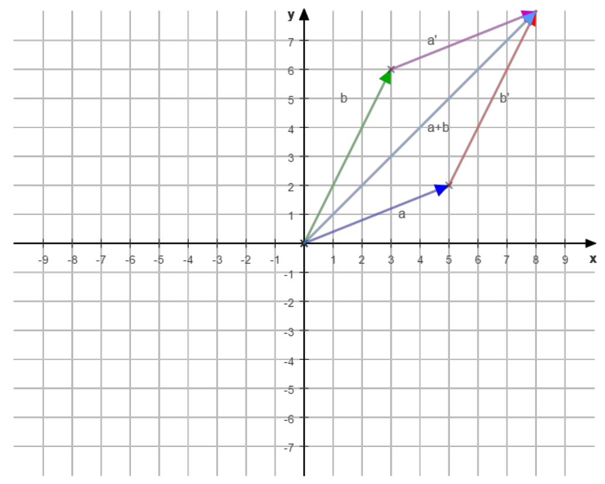
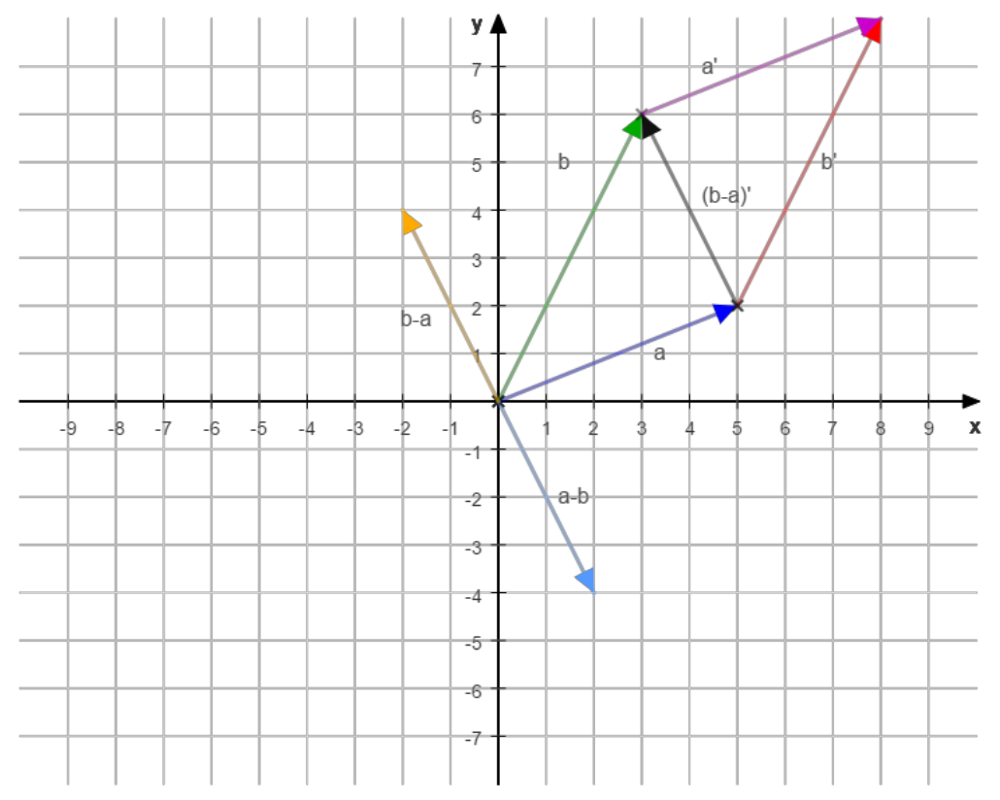
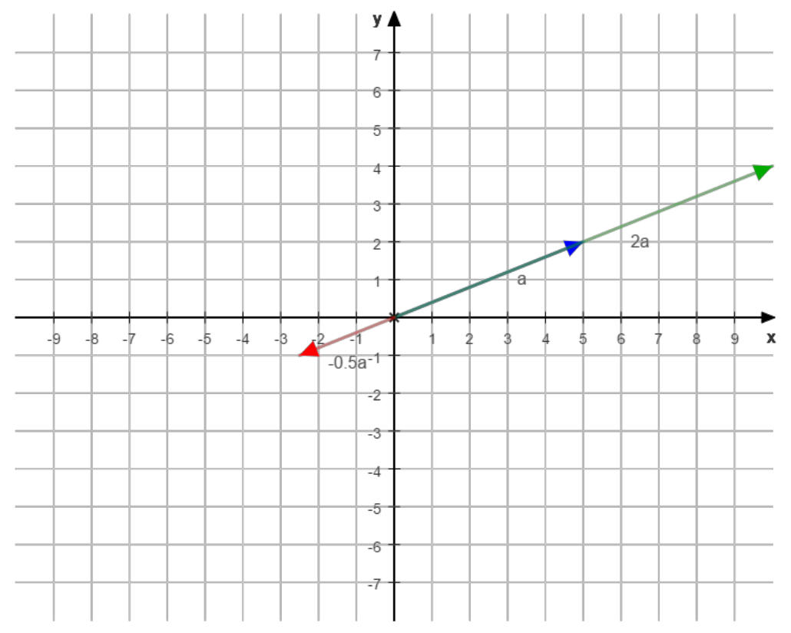
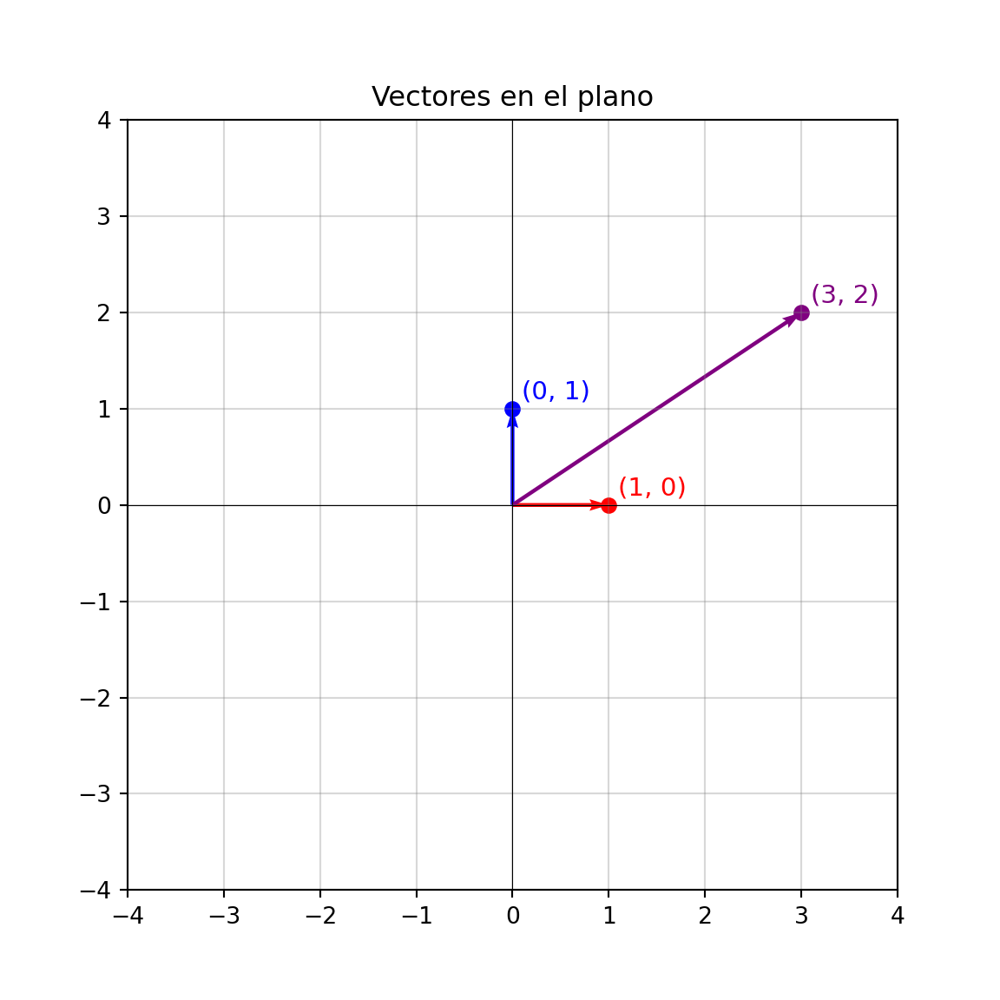
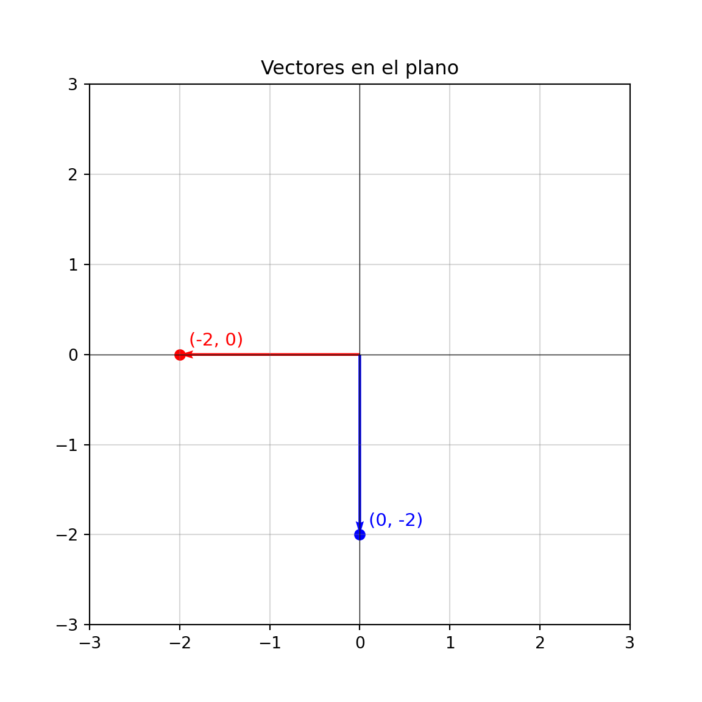
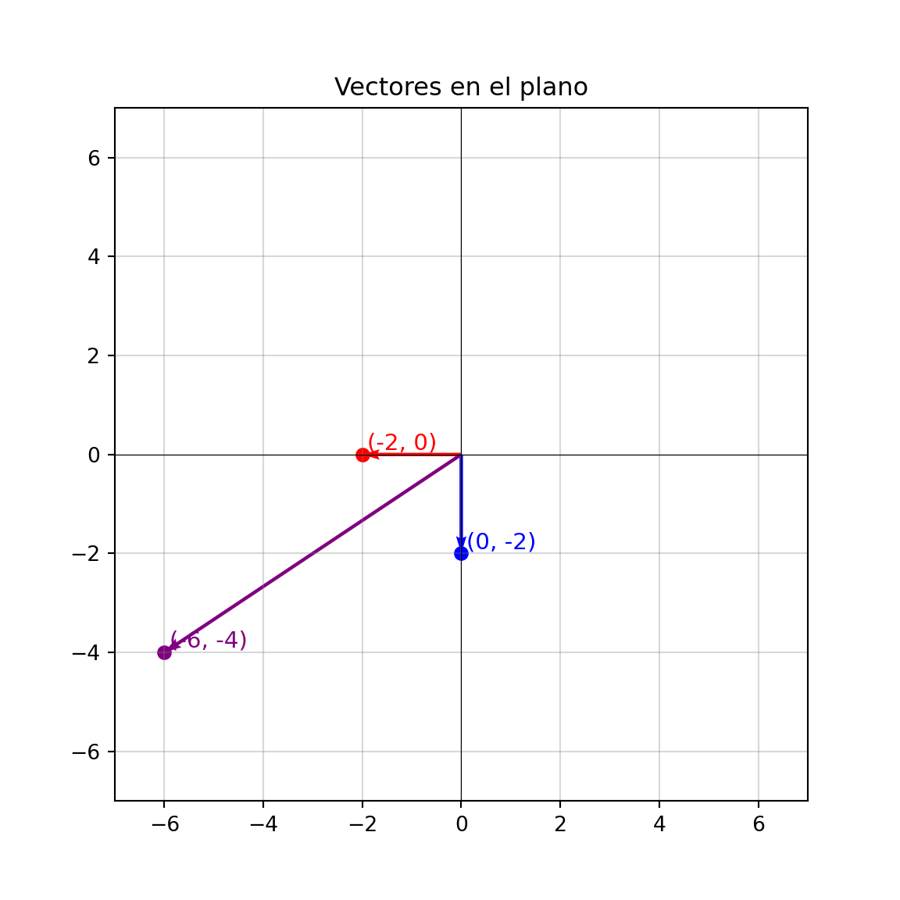
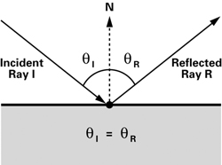

Capítulo 2 Preliminares
2.1 Interpretación geométrica de operaciones básicas en álgebra lineal
En esta sección exploraremos la interpretación geométrica de algunas de las operaciones fundamentales del álgebra lineal. Comprender estas representaciones visuales nos permitirá conectar los conceptos algebraicos con su significado espacial.
2.1.1 Operaciones entre vectores
Suma de vectores

Resta de vectores

Escalamiento

Producto punto
La interpretación geométrica del producto punto suele ser menos intuitiva, ya que el resultado de la operación entre dos vectores no es otro vector, sino un escalar. Sin embargo, esta operación cobra gran relevancia al aplicarse en la multiplicación de matrices, donde los productos punto entre filas y columnas generan los elementos de la matriz resultante.
Recordemos que el producto punto se define algebraicamente como:
\[a \cdot b = a_1b_1 + a_2b_2 + ... + a_nb_n\]
Aunque esta forma es útil para el cálculo, la expresión en términos de magnitud y ángulo resulta más reveladora desde el punto de vista geométrico:
\[a \cdot b = |a||b|cos(\theta)\]
A partir de esta relación se deriva uno de los resultados más importantes en las matemáticas: la desigualdad de Cauchy–Schwarz, la cual establece que el valor absoluto del producto punto de dos vectores está acotado por el producto de sus magnitudes:
\[-1 \leq cos(\theta) \leq 1 \] \[|a||b| \leq a \cdot b \leq |a||b|\] \[|a \cdot b| \leq |a||b|\] Entonces tenemos una pista.
Pregunta:¿Que podriamos inferir de los siguientes resultados?
\[a \cdot b = |a||b|\]
\[a \cdot b = 0\]
Ver respuesta
El angulo \(\theta\)
Si \(a \cdot b = |a||b|\), entonces los vectores son paralelos.
Si \(a \cdot b = 0\), entonces los vectores son ortogonales.
2.1.2 Operaciones con matrices
2.1.2.1 Base vectorial
Una base vectorial de un espacio vectorial \(V\) sobre un campo \(\mathbb{F}\) (por ejemplo, \(\mathbb{R}\) o \(\mathbb{C}\)) es un conjunto de vectores \(\{ \mathbf{v}_1, \mathbf{v}_2, \dots, \mathbf{v}_n \} \subset V\) que cumple dos propiedades fundamentales:
Independencia lineal: Ningún vector de la base puede expresarse como combinación lineal de los demás. Formalmente, si
\[ a_1 \mathbf{v}_1 + a_2 \mathbf{v}_2 + \dots + a_n \mathbf{v}_n = \mathbf{0}, \] entonces necesariamente \(a_1 = a_2 = \dots = a_n = 0\), con \(a_i \in \mathbb{F}\).Generación del espacio: Cualquier vector \(\mathbf{u} \in V\) puede escribirse de forma única como una combinación lineal de los vectores de la base: \[ \mathbf{u} = c_1 \mathbf{v}_1 + c_2 \mathbf{v}_2 + \dots + c_n \mathbf{v}_n, \] donde \(c_i \in \mathbb{F}\).
Cuando una base tiene un número finito \(n\) de vectores, decimos que el espacio vectorial es de dimensión finita, y escribimos \(\dim(V) = n\).
Un ejemplo clásico en \(\mathbb{R}^2\) es la base canónica: \[ \mathbf{e}_1 = \begin{bmatrix} 1 \\ 0 \end{bmatrix}, \quad \mathbf{e}_2 = \begin{bmatrix} 0 \\ 1 \end{bmatrix}. \]
2.1.2.2 Relación de la base canónica con la matriz identidad
La base canonica es bastante conveniente por ser ortonormal, lo cual permite una facil interpretación. Debido a que es la base que usamos como referencia natural tiene una relación intrinseca con la matriz identidad.
Si colocamos los vectores canonicos como columnas dentro de una matriz, obtenemos:
\[ E = [e_1 e_2 ... e_n]\] Por tanto, la matriz identidad representa la base canónica del espacio vectorial. \[E = I_n = \begin{bmatrix} 1 & 0 & 0 & \cdots & 0 \\ 0 & 1 & 0 & \cdots & 0 \\ 0 & 0 & 1 & \cdots & 0 \\ \vdots & \vdots & \vdots & \ddots & \vdots \\ 0 & 0 & 0 & \cdots & 1 \end{bmatrix} \]
2.1.2.3 Visualizando las matrices como transformadores lineales
En el álgebra lineal, las matrices no solo representan conjuntos de números dispuestos en filas y columnas, sino también transformaciones geométricas y cambios de base dentro de los espacios vectoriales. Comprender esta dualidad entre estructura algebraica y significado geométrico permite visualizar cómo las matrices actúan sobre los vectores y cómo modifican la forma de un sistema de coordenadas.
Empecemos visualizando el vector \(v\) en el espacio canónico:
\[ v = \begin{bmatrix} 3 \\ 2 \end{bmatrix} \]
Donde los vectores de la base canónica estará en color azul (\(e_1\)), rojo (\(e_2\)) y el vector estará representado en color morado (\(v\)).

Para entender mejor el impacto de aplicarle una transformación descrita por la matriz \(M\) al vector \(v\), podemos primero mirar el impacto sobre la base canónica.
\[M = \begin{bmatrix} -2 & 0 \\ 0 & -2 \end{bmatrix}, \]
M = np.array([[-2, 0],
[0, -2]])
e1 = np.array([1, 0])
e2 = np.array([0, 1])
e1m = M @ e1
e2m = M @ e2
dibujar_vectores([e1m, e2m], ['red', 'blue'])
Basados en la transformación que tuvo la base canónica podemos anticipar que se realizo una rotación de 180 grados y cada componente se escalo en un factor de 2.
Por consiguiente esperamos que justo tenga ese impacto sobre el vector \(v\).
Por ejemplo si buscaramos entender el significado de aplicar la multiplicación de la matriz \(M\) a un vector \(v\):
\[M = \begin{bmatrix} -2 & 0 \\ 0 & -2 \end{bmatrix}, v = \begin{bmatrix} 3 \\ 2 \end{bmatrix} \\ v_m = Mv = \begin{bmatrix} (-6+0) \\ (0 + -4) \end{bmatrix} = \begin{bmatrix} -6 \\ -4 \end{bmatrix} \]
M = np.array([[-2, 0],
[0, -2]])
e1 = np.array([1, 0])
e2 = np.array([0, 1])
v = np.array([3, 2])
e1m = M @ e1
e2m = M @ e2
vm = M@v
dibujar_vectores([e1m, e2m,vm], ['red', 'blue','purple'])
Algo importante que vemos en este ejemplo es que existieron 2 transformaciones. Una que representa la rotación \(R\).
\[R = \begin{bmatrix} -1 & 0 \\ 0 & -1 \end{bmatrix}, \]
Y otra que representa un escalamiento \(E\)
\[E = \begin{bmatrix} 2 & 0 \\ 0 & 2 \end{bmatrix}, \]
Donde mediante una composición de estas 2 transformaciones podemos generar la matriz \(M = RE\).
\[M = \begin{bmatrix} 2 & 0 \\ 0 & 2 \end{bmatrix} \begin{bmatrix} -1 & 0 \\ 0 & -1 \end{bmatrix} = \begin{bmatrix} 2(-1) + 0 & 0 + 0 \\ 0 + 0 & 0 + 2(-1) \end{bmatrix} = \begin{bmatrix} -2 & 0 \\ 0 & -2 \end{bmatrix} \]
Pregunta: ¿Que efecto tendrá la transformación \(S\) sobre un vector \(v\)?
\[S = \begin{bmatrix} 1 & 1 \\ 1 & 1 \end{bmatrix}, \]
Ver respuesta
Se sumaran las componentes del vector \(v\) y formaran las nuevas componentes del vector \(v_s\). Generando vectores en 45º, 225º o sin magnitud.
\[v_s = \begin{bmatrix} v_1 + v_2 \\ v_1 + v_2 \end{bmatrix}, \]
Algo importante a no perder de vista es que si bien existe conmutatividad en la composición que mostramos hace un momento ya que \(RE = ER\). No se cumple bajo la propiedad del producto de matrices la propiedad de conmutatividad.
Por poner un ejemplo sencillo sea:
\[S = \begin{bmatrix} 1 & 2 \\ 3 & -1 \end{bmatrix} \\ ZS = \begin{bmatrix} 3 & 3 \\ 2 & 2 \end{bmatrix} \\ SZ = \begin{bmatrix} 4 & 1 \\ 4 & 1 \end{bmatrix} \\ \]
Sin embargo, la asociatividad si es algo que se cumple:
\[(ZS)v = Z(Sv)\]
Solo como recordatorio pondré las propiedades del producto de matrices:
Asociatividad:
\[ (AB)C = A(BC) \]
→ Siempre que las dimensiones sean compatibles.Distributividad respecto a la suma:
\[ A(B + C) = AB + AC \]
\[ (A + B)C = AC + BC \]Elemento neutro (matriz identidad):
Si \(A\) es cuadrada de tamaño \(n \times n\), entonces: \[ AI = IA = A, \]
donde \(I\) es la matriz identidad de tamaño \(n \times n\).❌ No es conmutativo en general:
\[ AB \neq BA \]
(aunque puede darse en casos particulares).
Pregunta: ¿Que efecto tendrá la transformación de la matriz identidad \(I\) sobre un vector \(v\)?
Ver respuesta
Pasar un vector en la base canonica a si misma no tendría ningun efecto, por lo cual el efecto esperado es \[Iv = v\]
Pregunta: Asumiendo un cuerpo reflejante en 2 dimensiones postrado horizontalmente, ¿es posible crear una matriz \(F\) que reciba un rayo de luz \(v\) y tenga como resultado el rayo de luz reflejado \(v_f\), decir así cual es?
Ver respuesta
En un caso un tanto ideal, preservamos la componente horizontal del vector e invertimos la dirección de la componente vertical.
\[F = \begin{bmatrix} 1 & 0 \\ 0 & -1 \end{bmatrix} \\\]
Adicionalmente podriamos introducir un factor de atenuación como escalamiento mediante una composición si así lo desearamos.

Pregunta: En la pregunta anterior, si rotaramos el espejo \(\theta\) grados desde el centro, ¿se podría generar una matriz \(F'\) para predecir el reflejo de un vector \(v\)?
Ver pista
Para resolver este caso, podemos partir de la matriz de rotación
\[R(\theta) = \begin{bmatrix} \cos \theta & -\sin \theta \\ \sin \theta & \phantom{-}\cos \theta \end{bmatrix}\]
El resto del proceso se deja al lector como ejercicio.